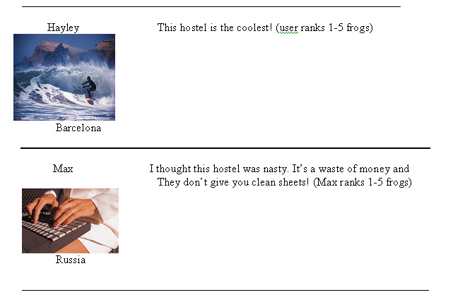

<PRE>
Lodging Tab Fields

Hostels
Hotels
Apartments
Camping

A review will look something like this:

Hostel: The Flying Catalan
Address: 1234 Barrio Gotico
Directions: Get off at the Urquinona metro stop, walk up the hill. Turn left on Calle Princessa, it's  two blocks up on the right.
Cost: Dorms $12/night. Singles $20/night. Doubles $15/night.
Cleanliness: (Rate 1-5 frogs) There needs to be a text box for people to write about the cleanliness, like if they supply sheets or towels or what.
Average Rate: (1-5 frogs) (When each user posts a comment on the Museum they should be able to give it a 1-5 frog rate. This should factor into the average rate at the top with the museum's main info.)
Reviews:
